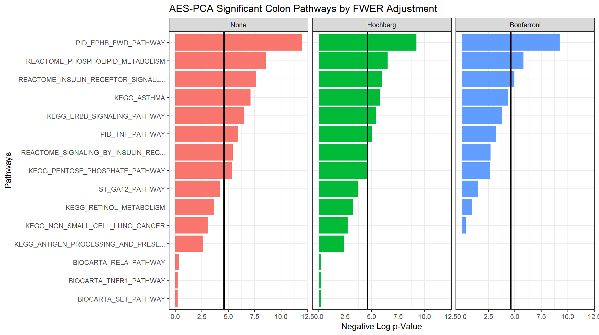
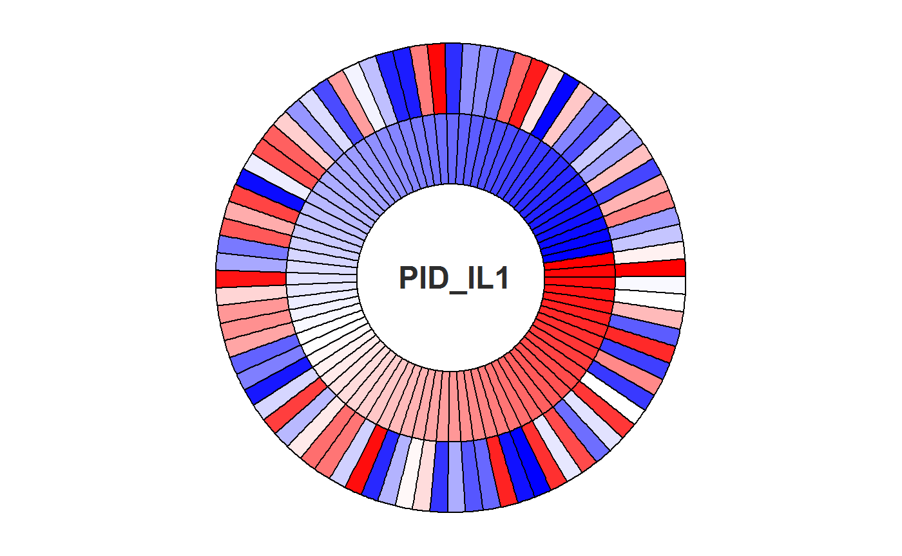

Supplement5-Analyse_Results.RmdThis vignette is the fifth chapter in the “Pathway Significance Testing with pathwayPCA” workflow, providing a detailed perspective to the Inspect Results section of the Quickstart Guide. This vignette will discuss graphing the pathway-specific \(p\)-values, FDR values, and associated log-scores. Also, we will discuss how to plot the gene- or protein-specific loadings within a certain pathway and further how to plot the correlation between a gene or protein within a pathway and the principal component representing that pathway.
Before we move on, we will outline our steps. After reading this vignette, you should be able to
First, load the pathwayPCA package and the tidyverse package suite.
First, we will replicate the data setup from the previous vignette chapters on importing data and creating data objects ( Chapter 2: Import and Tidy Data and Chapter 3: Creating -Omics Data Objects, respectively). See these chapters for detailed explination of the code below.
# Load Data: see Chapter 2
data("colonSurv_df")
data("colon_pathwayCollection")
# Create -Omics Container: see Chapter 3
colon_OmicsSurv <- CreateOmics(
assayData_df = colonSurv_df[, -(2:3)],
pathwayCollection_ls = colon_pathwayCollection,
response = colonSurv_df[, 1:3],
respType = "surv"
)
#>
#> ====== Creating object of class OmicsSurv =======
#> The input pathway database included 676 unique features.
#> The input assay dataset included 656 features.
#> Only pathways with at least 3 or more features included in the assay dataset are
#> tested (specified by minPathSize parameter). There are 15 pathways which meet
#> this criterion.
#> Because pathwayPCA is a self-contained test (PMID: 17303618), only features in
#> both assay data and pathway database are considered for analysis. There are 615
#> such features shared by the input assay and pathway database.We will resume inspection of the analysis results from the chapter 4 vignette for the AESPCA method.
# AESPCA Analysis: see Chapter 4
colonSurv_aespcOut <- AESPCA_pVals(
object = colon_OmicsSurv,
numReps = 0,
numPCs = 2,
parallel = TRUE,
numCores = 2,
adjustpValues = TRUE,
adjustment = c("BH", "Bonf")
)
#> Part 1: Calculate Pathway AES-PCs
#> Initializing Computing Cluster: DONE
#> Extracting Pathway PCs in Parallel: DONE
#>
#> Part 2: Calculate Pathway p-Values
#> Initializing Computing Cluster: DONE
#> Extracting Pathway p-Values in Parallel: DONE
#>
#> Part 3: Adjusting p-Values and Sorting Pathway p-Value Data Frame
#> DONEThe first element of this results data object is a data frame of pathways and their significance levels (pVals_df).
getPathpVals(colonSurv_aespcOut)
#> # A tibble: 15 x 4
#> terms rawp FDR_BH FWER_Bonferroni
#> <chr> <dbl> <dbl> <dbl>
#> 1 PID_EPHB_FWD_PATHWAY 0.00000653 9.80e-5 0.0000980
#> 2 REACTOME_PHOSPHOLIPID_METABOLISM 0.000196 1.47e-3 0.00295
#> 3 REACTOME_INSULIN_RECEPTOR_SIGNALLING_CAS… 0.000490 2.45e-3 0.00735
#> 4 KEGG_ASTHMA 0.000821 3.08e-3 0.0123
#> 5 KEGG_ERBB_SIGNALING_PATHWAY 0.00147 4.42e-3 0.0221
#> 6 PID_TNF_PATHWAY 0.00260 6.51e-3 0.0390
#> 7 REACTOME_SIGNALING_BY_INSULIN_RECEPTOR 0.00442 9.08e-3 0.0662
#> 8 KEGG_PENTOSE_PHOSPHATE_PATHWAY 0.00484 9.08e-3 0.0726
#> 9 ST_GA12_PATHWAY 0.0148 2.46e-2 0.222
#> 10 KEGG_RETINOL_METABOLISM 0.0255 3.82e-2 0.382
#> 11 KEGG_NON_SMALL_CELL_LUNG_CANCER 0.0469 6.39e-2 0.703
#> 12 KEGG_ANTIGEN_PROCESSING_AND_PRESENTATION 0.0737 9.21e-2 1
#> 13 BIOCARTA_RELA_PATHWAY 0.709 8.01e-1 1
#> 14 BIOCARTA_TNFR1_PATHWAY 0.776 8.01e-1 1
#> 15 BIOCARTA_SET_PATHWAY 0.801 8.01e-1 1Given the \(p\)-values from these pathways, we will now graph their score (negative log of the \(p\)-value) and description for the top 15 most-significant pathways.
Because pathway names are quite long, we truncate names longer than 35 characters for better display in the graphs.
pVals_df <-
getPathpVals(colonSurv_aespcOut) %>%
mutate(
terms = ifelse(
str_length(terms) > 35,
paste0(str_sub(terms, 1, 33), "..."),
terms
)
)
pVals_df
#> # A tibble: 15 x 4
#> terms rawp FDR_BH FWER_Bonferroni
#> <chr> <dbl> <dbl> <dbl>
#> 1 PID_EPHB_FWD_PATHWAY 0.00000653 0.0000980 0.0000980
#> 2 REACTOME_PHOSPHOLIPID_METABOLISM 0.000196 0.00147 0.00295
#> 3 REACTOME_INSULIN_RECEPTOR_SIGNALL... 0.000490 0.00245 0.00735
#> 4 KEGG_ASTHMA 0.000821 0.00308 0.0123
#> 5 KEGG_ERBB_SIGNALING_PATHWAY 0.00147 0.00442 0.0221
#> 6 PID_TNF_PATHWAY 0.00260 0.00651 0.0390
#> 7 REACTOME_SIGNALING_BY_INSULIN_REC... 0.00442 0.00908 0.0662
#> 8 KEGG_PENTOSE_PHOSPHATE_PATHWAY 0.00484 0.00908 0.0726
#> 9 ST_GA12_PATHWAY 0.0148 0.0246 0.222
#> 10 KEGG_RETINOL_METABOLISM 0.0255 0.0382 0.382
#> 11 KEGG_NON_SMALL_CELL_LUNG_CANCER 0.0469 0.0639 0.703
#> 12 KEGG_ANTIGEN_PROCESSING_AND_PRESE... 0.0737 0.0921 1
#> 13 BIOCARTA_RELA_PATHWAY 0.709 0.801 1
#> 14 BIOCARTA_TNFR1_PATHWAY 0.776 0.801 1
#> 15 BIOCARTA_SET_PATHWAY 0.801 0.801 1For the data frame containing the survival data pathway \(p\)-values, we will transform the data for better graphics. This code takes in the pathway \(p\)-values data frame from the AESPCA method output and gathers it into a “tidy” data frame (compatible with ggplot). We also add on a column for the negative natural logarithm of the pathway \(p\)-values (called score) and recode the label of the \(p\)-value adjustment method.
colonOutGather_df <-
# Take in the results data frame,
pVals_df %>%
# "tidy" the data,
gather(variable, value, -terms) %>%
# add the score variable, and
mutate(score = -log(value)) %>%
# store the adjustment methods as a factor
mutate(variable = factor(variable)) %>%
mutate(
variable = recode_factor(
variable,
rawp = "None",
FDR_BH = "Hochberg",
FWER_Bonferroni = "Bonferroni"
)
)Now we will plot the pathway \(p\)-values for the most significant pathways as a horizontal bar chart. For more information on how to modify ggplot graphs, or to learn how to create your own, please see Chang’s R Graphics Cookbook or Wickham’s ggplot2: Elegant Graphics for Data Analysis.
First, we select the rows of the \(p\)-values data frame which correspond to the adjustment method we are interested in. We will select the Benjamini and Hochberg FDR-adjustment method.
Now we plot the pathway significance level for the pathways based on this FDR-adjustment method.
ggplot(BHpVals_df) +
# set overall appearance of the plot
theme_bw() +
# Define the dependent and independent variables
aes(x = reorder(terms, score), y = score) +
# From the defined variables, create a vertical bar chart
geom_col(position = "dodge", fill = "#F47321") +
# Set main and axis titles
ggtitle("AES-PCA Significant Pathways: Colon Cancer") +
xlab("Pathways") +
ylab("Negative Log BH-FDR") +
# Add a line showing the alpha = 0.01 level
geom_hline(yintercept = -log(0.01), size = 2, color = "#005030") +
# Flip the x and y axes
coord_flip()If we were interested in comparing adjustment methods, we can. This figure shows that a few of the simulated pathways are significant at the \(\alpha = 0.01\) for either the Benjamini and Hochberg or Bonferroni FWER approaches. The vertical black line is at \(-\log(p = 0.01)\). This figure is slightly different from the figures shown in the Graph Top Pathways subsection of the Quickstart Guide.
ggplot(colonOutGather_df) +
# set overall appearance of the plot
theme_bw() +
# Define the dependent and independent variables
aes(x = reorder(terms, score), y = score) +
# From the defined variables, create a vertical bar chart
geom_col(position = "dodge", aes(fill = variable)) +
# Set the legend, main titles, and axis titles
scale_fill_discrete(guide = FALSE) +
ggtitle("AES-PCA Significant Colon Pathways by FWER Adjustment") +
xlab("Pathways") +
ylab("Negative Log p-Value") +
# Add a line showing the alpha = 0.01 level
geom_hline(yintercept = -log(0.01), size = 1) +
# Flip the x and y axes
coord_flip() +
# Create a subplot for each p-value adjustment method
facet_grid(. ~ variable)
Now that we have a few significant pathways, we can look at the loadings of each gene onto the first AES-PC from these pathways.
pVals_df %>%
filter(FDR_BH < 0.01) %>%
select(terms)
#> # A tibble: 8 x 1
#> terms
#> <chr>
#> 1 PID_EPHB_FWD_PATHWAY
#> 2 REACTOME_PHOSPHOLIPID_METABOLISM
#> 3 REACTOME_INSULIN_RECEPTOR_SIGNALL...
#> 4 KEGG_ASTHMA
#> 5 KEGG_ERBB_SIGNALING_PATHWAY
#> 6 PID_TNF_PATHWAY
#> 7 REACTOME_SIGNALING_BY_INSULIN_REC...
#> 8 KEGG_PENTOSE_PHOSPHATE_PATHWAYWe will chose the top two significant pathways for closer inspection, and we want to ascertain which genes load onto the pathway PCs. Notice that the pathway loadings are named by the internal pathway key, so we need to use the getPathPCL() to match this key to its pathway and extract the pathway PCs and loadings (PC & L) list from the colonSurv_aespcOut object. Here are the loading vectors and pathway details from PID_EPHB_FWD_PATHWAY:
pathway491_ls <- getPathPCLs(colonSurv_aespcOut, "PID_EPHB_FWD_PATHWAY")
pathway491_ls
#> $PCs
#> # A tibble: 250 x 3
#> sampleID V1 V2
#> <chr> <dbl> <dbl>
#> 1 subj1 -0.712 0.525
#> 2 subj2 -0.0580 0.293
#> 3 subj3 -1.65 0.367
#> 4 subj4 3.63 1.78
#> 5 subj5 -1.60 -0.279
#> 6 subj6 1.95 3.12
#> 7 subj7 2.38 1.48
#> 8 subj8 -1.48 -0.126
#> 9 subj9 -0.102 0.364
#> 10 subj10 1.89 2.05
#> # … with 240 more rows
#>
#> $Loadings
#> # A tibble: 40 x 3
#> featureID PC1 PC2
#> <chr> <dbl> <dbl>
#> 1 EPHB2 0.242 0.123
#> 2 EPHB4 0.168 0
#> 3 EFNA5 0 0
#> 4 MAPK1 -0.265 0.251
#> 5 SRC 0 0.416
#> 6 GRB2 0 0
#> 7 MAP2K1 0 0
#> 8 PXN 0 0.471
#> 9 CRK 0 0
#> 10 CDC42 0 0
#> # … with 30 more rows
#>
#> $pathway
#> [1] "pathway491"
#>
#> $term
#> [1] "PID_EPHB_FWD_PATHWAY"
#>
#> $description
#> [1] NAThis tells us that pathway491 represents the EPHB forward signaling pathway.
We can also extract the PCs and loadings vectors for KEGG_ASTHMA (the Asthma pathway), which we will compare later.
Given the loading vectors from the EPHB forward signaling pathway, we need to wrangle them into a data frame that the ggplot() function can use. For this, we’ve written a function that you can modify as you need. This function takes in the pathway PC & L list returned by the getPathPCLs() function and returns a data frame with all the components necessary for a plot of the gene loadings. For more aesthetically-pleasing plots, we set the default for one PC or loading vector per figure.
TidyLoading <- function(pathwayPCL, numPCs = 1){
# Remove rows with 0 loading from the first numPCs columns
loadings_df <- pathwayPCL$Loadings
totLoad_num <- rowSums(abs(
loadings_df[, 2:(numPCs + 1), drop = FALSE]
))
keepRows_idx <- totLoad_num > 0
loadings_df <- loadings_df[keepRows_idx, , drop = FALSE]
# Sort the value on first feature
load_df <- loadings_df %>%
arrange(desc(PC1))
# Wrangle the sorted loadings:
gg_df <- load_df %>%
# make the featureID column a factor,
mutate(featureID = factor(featureID, levels = featureID)) %>%
# rename the ID column,
rename(ID = featureID) %>%
# "tidy" the data, and
gather(Feature, Value, -ID) %>%
# add the up / down indicator.
mutate(Direction = ifelse(Value > 0, "Up", "Down"))
# Add the pathway name and description
attr(gg_df, "PathName") <- pathwayPCL$term
attr(gg_df, "Description") <- pathwayPCL$description
gg_df
}We can use this function to “tidy up” the loadings from the EPHB forward signaling pathway:
We also wrote a function to create a ggplot graph object which uses this tidy data frame.
PathwayBarChart <- function(ggData_df, y_lab,
colours = c(Up = "#009292", Down = "#920000"),
label_size = 5,
sigFigs = 0,
...){
# Base plot layer
p1 <- ggplot(ggData_df, aes(x = ID, y = Value, color = Direction))
# Add geometric layer and split by Feature
p1 <- p1 +
geom_col(aes(fill = Direction), width = 0.5) +
facet_wrap(~Feature, nrow = length(unique(ggData_df$Feature)))
# Add Gene Labels
p1 <- p1 +
geom_text(
aes(y = 0, label = ID),
vjust = "middle",
hjust = ifelse(ggData_df$Direction == "Up", "top", "bottom"),
size = label_size, angle = 90, color = "black"
)
# Add Value Labels
p1 <- p1 +
geom_text(
aes(label = ifelse(ggData_df$Value == 0, "", round(Value, sigFigs))),
vjust = ifelse(ggData_df$Direction == "Up", "top", "bottom"),
hjust = "middle",
size = label_size, color = "black"
)
# Set the Theme
p1 <- p1 +
scale_y_continuous(expand = c(0.15, 0.15)) +
theme_classic() +
theme(
axis.title.x = element_blank(),
axis.text.x = element_blank(),
axis.ticks.x = element_blank(),
strip.text = element_text(size = 14),
legend.position = "none"
)
# Titles, Subtitles, and Labels
pathName <- attr(ggData_df, "PathName")
pathDesc <- attr(ggData_df, "Description")
if(is.na(pathDesc)){
p1 <- p1 + ggtitle(pathName) + ylab(y_lab)
} else {
p1 <- p1 + labs(title = pathName, subtitle = pathDesc, y = y_lab)
}
# Return
p1
}This is the resulting loading bar plot for the EPHB forward signaling pathway (because all of the loadings are between -1 and 1, we set the significant figures to 2):
# pathway491_loadings_bar_chart, fig.height = 6, fig.width = 10.7, out.width = "100%", out.height = "60%"
PathwayBarChart(
ggData_df = tidyLoad491_df,
y_lab = "PC Loadings",
sigFigs = 2
)For comparison, this is the bar plot for the asthma pathway (pathway177 in our -Omics data container):
Additionally, we can calculate the correlation between gene expression in the assay corresponding to the EPHB forward signaling pathway and the PC vectors extracted from this pathway. Thus, we need to extract the recorded gene levels corresponding to the non-zero loadings for the PCs, calculate the Spearman correlations between these values and their extracted PCs, then wrangle these correlations into a data frame that the ggplot() function can use. We have written an additional function that you can modify as you need. This function takes in the Omics data container (that you created in Chapter 3) and the PC & L list returned by getPathPCLs(). This function returns a data frame with all the components necessary for a plot of the assay-PC correlations.
TidyCorrelation <- function(Omics, pathwayPCL, numPCs = 1){
loadings_df <- pathwayPCL$Loadings
totLoad_num <- rowSums(abs(
loadings_df[, 2:(numPCs + 1), drop = FALSE]
))
keepRows_idx <- totLoad_num > 0
loadings_df <- loadings_df[keepRows_idx, , drop = FALSE]
geneNames <- loadings_df$featureID
geneCorr_mat <- t(
cor(
pathwayPCL$PCs[, -1],
getAssay(Omics)[geneNames],
method = "spearman"
)
)
colnames(geneCorr_mat) <- paste0("PC", 1:ncol(geneCorr_mat))
pathwayPCL$Loadings <- data.frame(
featureID = rownames(geneCorr_mat),
geneCorr_mat,
stringsAsFactors = FALSE,
row.names = NULL
)
TidyLoading(pathwayPCL, numPCs = numPCs)
}We can use this function to “tidy up” the loadings from the EPHB forward signaling pathway:
This is the resulting correlation bar plot for the EPHB forward signaling pathway:
# pathway491_correlations_bar_chart, fig.height = 6, fig.width = 10.7, out.width = "100%", out.height = "60%"
PathwayBarChart(
ggData_df = tidyCorr491_df,
y_lab = "Assay-PC Correlations",
sigFigs = 1
)And this is the same figure for the asthma pathway.
estimate pathway activities for each patient, both for protein expressions and copy number expressions separately
This is the circle plot for the IL-1 signaling pathway:
# Load data (already ordered by copyNumber PC1 score)
circlePlotData <- readRDS("circlePlotData.RDS")
# Set color scales
library(grDevices)
bluescale <- colorRampPalette(c("blue", "white"))(45)
redscale <- colorRampPalette(c("white", "red"))(38)
Totalpalette <- c(bluescale,redscale)
# Apply colours
copyCol <- Totalpalette[circlePlotData$copyNumOrder]
proteoCol <- Totalpalette[circlePlotData$proteinOrder]Blue stands for negative PC1 score, Red stands for positive PC1 score. The inner loop stands for copy numbers, outer loop stands for protein expression.
library(circlize)
#> ========================================
#> circlize version 0.4.8
#> CRAN page: https://cran.r-project.org/package=circlize
#> Github page: https://github.com/jokergoo/circlize
#> Documentation: http://jokergoo.github.io/circlize_book/book/
#>
#> If you use it in published research, please cite:
#> Gu, Z. circlize implements and enhances circular visualization
#> in R. Bioinformatics 2014.
#> ========================================
# Set parameters
nPathway <- 83
factors <- 1:nPathway
# Plot Setup
circos.clear()
circos.par(
"gap.degree" = 0,
"cell.padding" = c(0, 0, 0, 0),
start.degree = 360/40,
track.margin = c(0, 0),
"clock.wise" = FALSE
)
circos.initialize(factors = factors, xlim = c(0, 3))
# ProteoOmics
circos.trackPlotRegion(
ylim = c(0, 3),
factors = factors,
bg.col = proteoCol,
track.height = 0.3
)
# Copy Number
circos.trackPlotRegion(
ylim = c(0, 3),
factors = factors,
bg.col = copyCol,
track.height = 0.3
)
# Add labels
suppressMessages(
circos.trackText(
rep(-3, nPathway),
rep(-3.8,nPathway),
labels = "PID_IL1",
factors = factors,
col = "#2d2d2d",
font = 2,
adj = par("adj"),
cex = 1.5,
facing = "downward",
niceFacing = TRUE
)
)
We have has covered in this vignette:
We are exploring options to connect this package to other pathway-testing software. We are further considering other summary functions and/or graphics to help display the output of our *_pVals() functions. If you have any questions, comments, complaints, or suggestions, please submit an issue ticket and give us some feedback. Also you can visit our development page.
Here is the R session information for this vignette:
sessionInfo()
#> R version 3.6.2 (2019-12-12)
#> Platform: x86_64-w64-mingw32/x64 (64-bit)
#> Running under: Windows 7 x64 (build 7601) Service Pack 1
#>
#> Matrix products: default
#>
#> locale:
#> [1] LC_COLLATE=English_United States.1252
#> [2] LC_CTYPE=English_United States.1252
#> [3] LC_MONETARY=English_United States.1252
#> [4] LC_NUMERIC=C
#> [5] LC_TIME=English_United States.1252
#>
#> attached base packages:
#> [1] stats graphics grDevices utils datasets methods base
#>
#> other attached packages:
#> [1] circlize_0.4.8 pathwayPCA_1.1.4 forcats_0.4.0 stringr_1.4.0
#> [5] dplyr_0.8.3 purrr_0.3.3 readr_1.3.1 tidyr_1.0.0
#> [9] tibble_2.1.3 ggplot2_3.2.1 tidyverse_1.3.0
#>
#> loaded via a namespace (and not attached):
#> [1] Rcpp_1.0.3 lubridate_1.7.4 lattice_0.20-38
#> [4] assertthat_0.2.1 zeallot_0.1.0 rprojroot_1.3-2
#> [7] digest_0.6.23 utf8_1.1.4 plyr_1.8.5
#> [10] R6_2.4.1 cellranger_1.1.0 backports_1.1.5
#> [13] lars_1.2 reprex_0.3.0 evaluate_0.14
#> [16] httr_1.4.1 pillar_1.4.3 GlobalOptions_0.1.1
#> [19] rlang_0.4.2 lazyeval_0.2.2 readxl_1.3.1
#> [22] rstudioapi_0.10 Matrix_1.2-18 rmarkdown_2.0
#> [25] pkgdown_1.4.1 labeling_0.3 desc_1.2.0
#> [28] splines_3.6.2 munsell_0.5.0 broom_0.5.3
#> [31] compiler_3.6.2 modelr_0.1.5 xfun_0.11
#> [34] pkgconfig_2.0.3 shape_1.4.4 htmltools_0.4.0
#> [37] tidyselect_0.2.5 fansi_0.4.0 crayon_1.3.4
#> [40] dbplyr_1.4.2 withr_2.1.2 MASS_7.3-51.5
#> [43] grid_3.6.2 nlme_3.1-143 jsonlite_1.6
#> [46] gtable_0.3.0 lifecycle_0.1.0 DBI_1.1.0
#> [49] magrittr_1.5 scales_1.1.0 cli_2.0.0
#> [52] stringi_1.4.3 reshape2_1.4.3 farver_2.0.1
#> [55] fs_1.3.1 xml2_1.2.2 ellipsis_0.3.0
#> [58] generics_0.0.2 vctrs_0.2.1 tools_3.6.2
#> [61] glue_1.3.1 hms_0.5.2 parallel_3.6.2
#> [64] survival_3.1-8 yaml_2.2.0 colorspace_1.4-1
#> [67] rvest_0.3.5 memoise_1.1.0 knitr_1.26
#> [70] haven_2.2.0